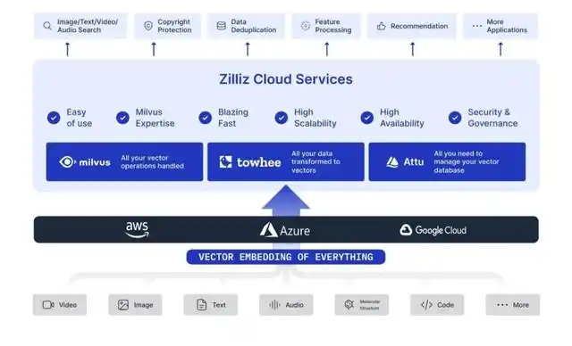
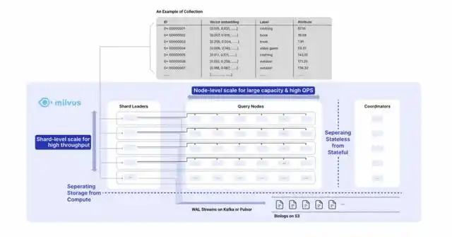

图片、视频、DNA序列……非结构化数据井喷，新技术风向标在哪？
万物互联的今天，数据井喷，数据类型也不断增长，其中包括图片、视频、分子结构等在内的非结构化数据暴涨。根据 IDC 预测，到 2025 年，中国数据总量预计增加至 48.6ZB，独占全球份额的 27.8%，成为世界上数据容量最大的区域。在全球数据增量和总量都不断增长的同时，其中 80% 都数据都将是非结构化数据。这不仅为非结构化数据研究提供了沃土，也为技术创业者创造了机会。
另一方面，回归到数据技术本身，如何在新型数据、计算机、上层业务之间构筑有效的桥梁，正是当下技术公司亟需解决的问题。
首先要实现计算机对于非结构化数据的理解，业界目前普遍认可的做法便是通过深度学习模型，将数据生成向量 embedding，然后做近邻匹配，实现相似数据检索。这一过程涉及多个技术领域，比如除了传统的大规模数据存储、传输外，还要关注 AI 技术中深度学习模型对向量数据转换的精确度的影响等等。再加之数据库上云所涉及到的分布式技术、在线服务能力等等，对向量数据库的开发者提出了非常高的技术要求。
对于这些问题，向量数据库公司 Ziliiz 提出了自己的解决办法，并开源非结构化数据处理系列工具链，包括非结构化数据 ETL 平台 Towhee、向量数据库 Milvus、Milvus 图形化管理工具Attu、可视化工具 Feder。Zilliz 已帮助全球超过 1000 家企业级用户实现非结构化数据处理，释放数据价值，赋能客户业务发展。现在，Zilliz 发布 Zilliz Cloud 服务，开始主攻北美市场，希望在全球化的舞台上，做向量数据库领域的“引领者”。
为了加速非结构化数据技术的研究，9 月 24 - 25 日，Zilliz 特举办 2022 首届非结构化数据大会，向全球用户展示 Zilliz 在向量数据库领域的研究成果，同时邀请众多行业伙伴，分享向量数据库在不同领域的落地经验。
“数据其实是我们对世界的一种数字表示。”在 Zilliz 创始人兼首席执行官星爵看来，结构化数据更多的是用计算机的视角，把数据进行组织和存储，而现在的非结构化数据超出了机器处理的范畴，属于自然界的视角，比如图片、视频、用户行为画像、分子和材料的三维结构、人类 DNA 测序结构等等。
在非结构化数据激增的趋势之下，星爵认为，我们需要做是让计算机可以去存储、理解、分析更多数据，从而摆脱人类的脑力、时间的限制，实现一种可复制、可扩展、低成本的方法，去自动地、端到端地处理与分析数据，最终实现从非结构化数据中获取商业洞见。
现在，Zilliz 将自身非结构化数据处理能力搬到了云上，意在进一步降低用户成本。本次峰会上，Zilliz 合伙人和技术总监栾小凡带来了重磅发布：云端全托管向量数据库服务 Zilliz Cloud。
Zilliz Cloud 有 6 个核心特点：一是高可用；二是对成本有很大的优化，包括 runtime 成本、开发运维等成本；三是有很好的扩展性，可以按需调用资源、按需付费；四是有很好的安全支持保障；五是优化使用体验，简化 ETL、数据管理、数据可视化等操作；六是 Zilliz Cloud 由 Milvus 原班人马打造，对非结构化数据处理有着丰富的经验，可以为用户提供更好的服务。
现阶段，Zilliz Cloud 在北美首发，基于 AWS 搭建第一个版本服务。接下来，Zilliz 计划在美西、美东地区扩展，国内和东南亚地区也将并行发展，并实现多云服务。

Zilliz Cloud 架构图Zilliz 非结构化数据处理工具链及研究成果
目前，向量数据库 Milvus 已迭代至 2.1 版本，2.2 版本也即将与大家见面。Zilliz 首席工程师焦恩伟介绍了新一代 Milvus 的新特性及未来规划。 最新的 Milvus 2.1 版本中，提供了内存多副本，查询可的能力；支持 String 类型，包括持在 Collection 中使 String 数据类型，对 String 类型建 Inverted Index 等等；持续的性能提升，包括持 ANN 索引，3.2x 性能提升等；还有其他新功能，如将 Kafka 作为 log broker ，SDK 身份认证等。
2.2 版本将增加磁盘索引、数据批量导入、RBAC 权限控制等功能。下一代的 Milvus 将主要围绕 AI 中台/AI 业务两大用户群、高性能向量库/海量向量分析两大用户群和场景进行迭代升级。

Milvus 架构图除 Milvus 之外，Towhee 也是本次峰会的亮点之一。这是 Zilliz 团队重点打造的第二个开源项目。Towhee 是一个开源的 embedding 框架，包含丰富的数据处理算法与神经网络模型。通过 Towhee，能够轻松地处理非结构化数据（如图片、视频、音频、长文本等），完成原始数据到向量的转换。
Zilliz 合伙人和产品总监郭人通介绍，相较于传统的结构化数据的 ETL 工具，非结构化数据 ETL 工具有 4 个较大的特点：首先在业务侧的原始数据上囊括了各式非结构化数据；其二，在 transform 过程中，会深入到数据底层语义去匹配高度相关的标签；其三，transform 过程中也会引入大量的 AI 能力，实现非结构化数据的精准分析；其四，在 load 环节，处理后的数据会流向以向量数据库为中心的数据平台或数据中台。在实际生产环境中，非结构化数据 ETL 流水线往往非常复杂，原因有 6 个：数据复杂，工具未实现标准化，涉及多个神经网络模型，解决方案难以高度模版化，需要较多人力，项目资源消耗大。
结合实际发展情况，非结构化数据 ETL 的问题应该由一个好的开源基础软件或者是开源的解决方案去解决。Towhee 便是基于此定位发起的。Towhee 设计了大量轻巧友善的接口，针对典型的 embedding 场景需要，Towhee 从中抽象出一系列 embedding 流水线。为了能够更好地融合进不同业务中，在生态对接和集成方面，Towhee 对接了大量的模型库，集成了一些较为成熟的数据处理技术生态，同时优化底层 Pipeline 能力。此外，Towhee 现在也在继承一系列高性能的第三方组件，满足更多用户需求。
郭人通博士还介绍了当下非结构化数据搜索的工具链与技术生态。
目前，非结构化数据搜索市场还存在很多挑战，比如缺乏构建模块和工具，很难把所有碎片拼凑在一起，重复发明轮子消耗资源，同时 AL/ML 基础设施也不够完善。面对诸多挑战，Zilliz 给出的答案是内外功兼修。内功方面，不断提升各个产品的性能、可靠性、可用性、可伸缩性。外功方面，通过 Zilliz Cloud 实现全托管向量数据库服务，将复杂的操作藏在 ETL 流水线之中，并且尽可能地优化与模型、数据处理工具、云服务的生态集成。
实际上，向量数据库相关技术当下也面临着许多挑战。Zilliz 研究团队负责人和高级研究员易小萌介绍，向量检索有三大关键技术挑战：向量数据处理维度灾难、多路折中以及复杂查询语义。近期，学术界探索向量检索时主要关注三方向：新的存储和硬件加速器支持、基于机器学习的调优策略，以及分布式方案。
向量数据库的产业落地实践
向量数据库技术现在已经在多个行业有了落地应用实践，许多企业使用 Milvus 处理海量非结构化数据，赋能业务发展。
在中国电信，其产品翼支付的 RiskX 风控模型引擎的算法体系主要分为视觉风控、风险信任体系、风险画像、风险时序模型、风控知识图谱五个版块。中国电信翼支付风控总监汤敏伟介绍，这五大版块都深度结合了 Milvus 的多种能力。比如针对开户/认证场景材料的背景特征提取，进行实时多模态高阶聚类，识别群体性风险时，就需要依靠 Milvus 的存储、检索能力来实现。
在深度学习领域，Milvus 被引入至飞桨 PaddleNLP 中。百度资深研发工程师方泽阳表示，Milvus 作为新一代向量数据库，具有部署简单、功能全面、性能极致、硬件支持广泛等特点。因此才会选择将 Milvus 作为向量搜索节点引入到能够快速搭建 NLP 产品级系统的工具——Pipeline 中。而且得益于 PaddlleNLP 组件式设计，将 Milvus 部署到向量召回场景，很是轻松，只需几行代码就能搞定。一个典型的例子是，某医疗信息服务提供商搭建医疗信息检索系统时，通过 ERNIE 3.0 模型和基于 Mivus 的向量召回系统，快速将传统基于 TF-IDF 的语义召回系统切换到基于预训练模型的召回系统，召回效果大幅提升，同时统稳定性也有很大提升。
基于 Milvus，虎牙天眼智能内容安全系统落地应用了整套弱监督敏感区域特征检索方案。虎牙安全算法高级研究员黎官钊表示，长远来看，基于 Milvus 检索有几大优势：首先，Milvus 不只是普通检索工具，更是完备的 AI 向量数据库，同时支持 Python、Go 等多种语言；二是便捷易用，提供了很多可视化的操作工具，迁移到 Milvus 很便利；三是在使用过程中遇到问题时，背后的公司和团队具备会积极地与其沟通，并且不断完善使之成为一款优秀的向量检索数据库。未来，除了进一步提升特征提取能力外，虎牙还将针对更多违规场景构建大规模检索库，结合利用和参与构建 Milvus 社区的相关能力，不断提升性能，并落地到更多业务场景。
在陌陌，其最初自建向量检索引擎 VRE，但随着业务变化，面临的挑战越来越多，比如 QPS 增大，latency 降低；无法支持更多索引类型；组件依赖多，故障定位链路长等。陌陌数据平台资深专家孔云龙介绍，几番调研对比了现有的开源向量检索产品之后，陌陌最终选择了将 Milvus 引入到实际业务中。
未来，陌陌将进一步完善基于 Milvus 的向量检索平台，比如权限管理、监控报警等；并投入更多人力优化 Milvus 的稳定性，将一些好的模块同步贡献到社区；同时会在陌陌探索更多应用场景，比如生态治理、动态搜索、推荐等等；此外，借助于公司内部的大数据平台，还将探索 Milvus 在离线集群混合部署、资源隔离等场景的应用。
开源开放，共筑未来
Zilliz 始终坚持开源开放的原则，在深耕开源社区的同时，也在积极加强和学术界的合作，分享最新研究成果。过去两年，Zilliz 分别在 SIGMOD 和 VLDB 两大数据库顶会上发表了 Milvus 研究论文。开源社区方面，Milvus 在过去一年的时间里，GitHub Star 数量增倍，已超 13000，贡献者数量翻番。 未来， Zilliz 也将持续发力开源社区的建设。
LF AI & Data 基金会的执行董事 Ibrahim Haddad 也为我们介绍了 Milvus 开源社区的成绩。他提到，Milvus 于 2020 年 1 月 进入 LF AI & Data 基金会孵化，仅用了一年半的时间就从基金会毕业。现在，已经有 1600 多名贡献者参与了 Milvus 项目，其中有 800 多名持续活跃的贡献者。他说：“这是一个了不起的数字，几乎是 2020 年 1 月之初刚加入我们时的九倍。”
Ibrahim Haddad 认为， 真正令人惊叹的是 Milvus 的项目增长和提交增长情况。“在短短的几个月时间，越来越多的人为该项目做出贡献，不断有新的东西提交上来。在过去的两年里，提交增长了约 270%。新贡献者的数量也在增长，每个月我们都能够吸引新的贡献者加入项目。Zilliz 团队在平衡项目方面做得非常出色，并且推动和吸引新的贡献者加入其中。"
实际上，当前国际市场上也有类似的向量数据库产品，但并非走的是开源开放的产品模式。此外，一些传统的数据库公司和公有云服务商也开始尝试探索向量检索领域。但相较而言，Zilliz 可以说是较早迈入向量数据库领域的公司，同时也早早地坚定了开源的路线，深入用户社区，了解用户需求，并且围绕核心产品 Milvus，逐渐搭建起上下游工具生态，优势显著。
放眼全球市场，在非结构化数据处理的技术探索之路上，谁能成为领跑者的答案现在还未揭晓。
但是通过这一次 Zilliz 2022 首届非结构化数据峰会，我们看到了一套正在趋于成熟的非结构化数据处理技术，也看到了其开源开放的优势所在，相信未来可期。